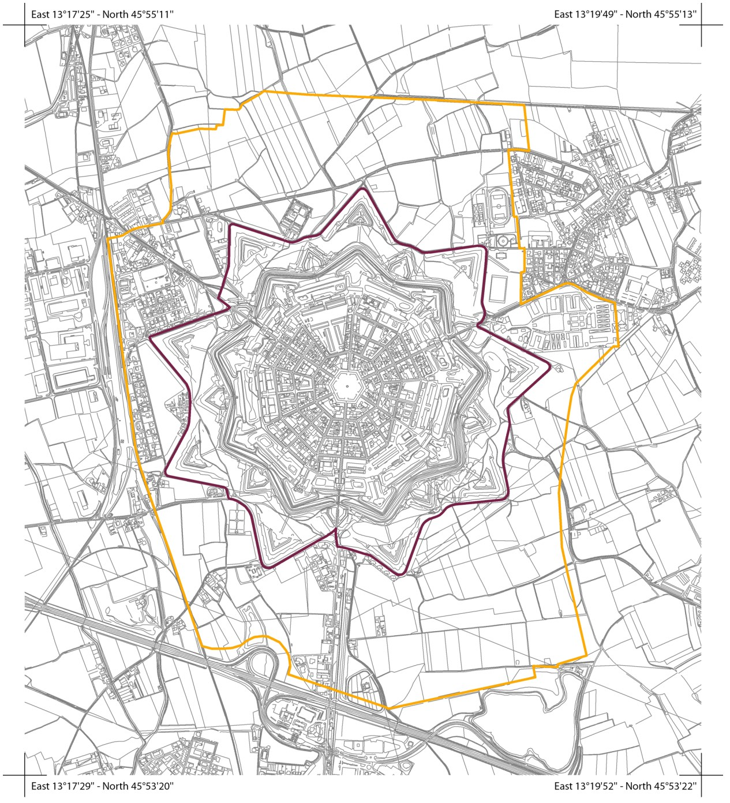

UN SISTEMA FORTIFICATO ECCEZIONALE DI DIMENSIONE EUROPEA

Il sito UNESCO transnazionale delle “Opere di difesa veneziane tra XVI e XVII secolo: Stato da Terra - Stato da Mar occidentale” si estende per più di 1000 chilometri, sviluppandosi fra Bergamo, estremo occidentale della Repubblica di Venezia, e la costa Adriatica orientale, includendo le 3 componenti italiane di Bergamo, Peschiera del Garda e Palmanova, le 2 componenti di Zara e Sebenico in Croazia e la fortezza di Cattaro in Montenegro. Insieme esse rappresentano la maestosità e la modernità della rete difensiva sviluppata nel Rinascimento dalla Repubblica di Venezia e basata sulle fortezze alla moderna, progettate grazie al contributo congiunto di esperti nell’arte della guerra, matematici, architetti, urbanisti e ingegneri, che unirono esperienza e competenze per studiare le migliori soluzioni.
La Repubblica di Venezia, una delle maggiori potenze commerciali e navali europee del suo periodo storico, raggiunse il massimo dell’estensione territoriale tra il XIII e il XVI secolo. Per difendere il proprio dominio, lo “Stato da Tera”, dai continui tentativi di invasione da parte degli eserciti europei e imperiali a Ponente e per salvaguardare lo “Stato da Mar” ad Est, proteggendo le rotte commerciali e i porti sul Mare Adriatico dalle incursioni nemiche, fra il XVI e il XVII secolo la Repubblica di Venezia fece costruire una serie di fortificazioni.
Strutture murarie imponenti e innovative, dall’eccezionale valore storico e tecnologico, le fortezze alla moderna, o bastionate, furono influenzate nella loro architettura dall’invenzione della polvere da sparo, che portò a cambiamenti fondamentali nelle tecniche militari. La loro unicità è legata da un lato alla varietà e qualità dei paesaggi in cui sono ubicate e dall’altro alla complessità di progettazione che unisce e contraddistingue l’intero sistema di fortificazioni e di realizzazione delle singole componenti in base alle diverse conformazioni dei territori.
Le opere di difesa veneziane forniscono una eccezionale testimonianza della cultura militare “alla moderna” che si è evoluta nella Repubblica di Venezia nei secoli XVI e XVII, coinvolgendo vasti territori e creando importanti interazioni. Insieme, le sei componenti sono rappresentative di un sistema realizzato per difendere lo Stato da Terra e lo Stato da Mar occidentale, territori gravitanti intorno al Mar Adriatico storicamente detto Golfo di Venezia. Il progetto difensivo con prerogative civili, militari e urbane, si ampliava attraversando la regione mediterranea fino al Levante.
Le opere di difesa veneziane presentano le caratteristiche del sistema fortificato alla moderna (sistema bastionato) costruito dalla Repubblica di Venezia in seguito ai cambiamenti introdotti in risposta alla diffusione delle armi da fuoco. Insieme, le sei componenti testimoniano in modo eccezionale le caratteristiche del sistema “alla moderna”, le moderne strategie di combattimento e le rinnovate esigenze architettoniche, la capacità tecnica e logistica della Serenissima pienamente espressa all'interno dello Stato da Terra e nell’area occidentale dello Stato da Mar.
il sito è un 'paesaggio culturale' = aree geografiche che in modo peculiare rappresentano l'opera combinata della natura e dell'uomo